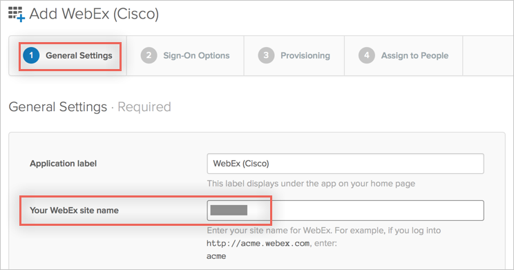
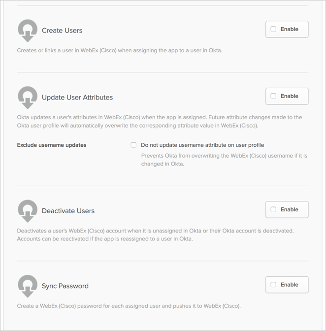
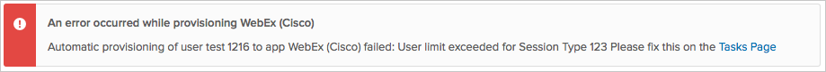

This guide provides the steps required to configure Provisioning for WebEx.
The following provisioning features are supported:
Import New Users
New users created in the third party application will be downloaded and turned in to new AppUser objects, for matching against existing OKTA users.
Import Profile Updates
Push New Users
New users created through OKTA will also be created in the third party application.
Push Password Updates
Updates made to the user's password through OKTA will be pushed to the third party application.
Push Profile Updates
Updates made to the user's profile through OKTA will be pushed to the third party application.
Push User Deactivation
Deactivating the user or disabling the user's access to the application through OKTA will deactivate the user in the third party application.
Reactivate Users
Reactivating the user through Okta will reactivate the user in the 3rd party application.
Before you configure provisioning for WebEx, make sure you have configured the Your WebEx site name name under the General Settings tab:

Configure your Provisioning settings for WebEx as follows:
Check the Enable provisioning features box.
Enter your WebEx API Credentials:
Enter the Username for the admin account.
Enter the Password for the Username account above.

Scroll down and select the Provisioning Features you want to enable.

Click Save.
You can now assign people to the app (if needed) and finish the application setup.
Okta does not support Webex with Spark Meet provisioning (WBS30).
Errors encountered:
User limit exceeded for Session Type:

To address this error, either extend your license limits or unassign other user(s) from the desired session type.